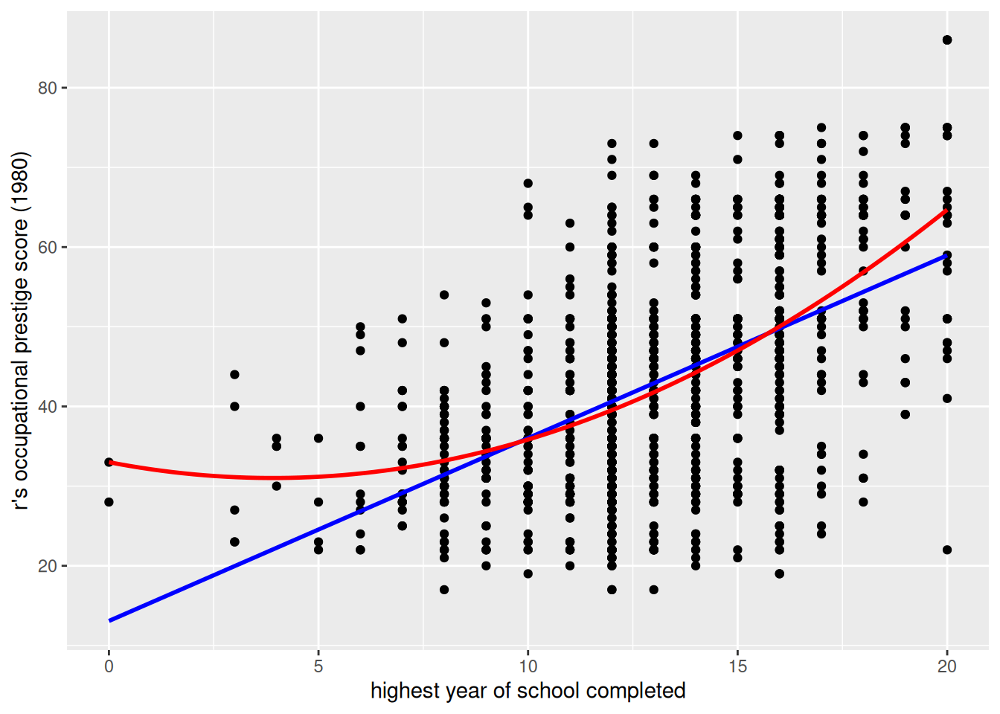

Use the dataset sesam. We predict postnumb (a post-test score) from age and prenumb (a pre-test score).
Fit a regression of postnumb on age and prenumb. Interpret each coefficient, the intercept, and the \(R^2\). Is age a significant predictor once prenumb is controlled for?
Fit a regression of postnumb on prenumb alone. Compare the coefficient for prenumb and the \(R^2\) to the model that also includes age. What do you conclude?
Donations, religion, and income
Use the dataset donations, which contains information on voluntary donations.. Treat the “miscellaneous” category of religion as missing, and exclude the corresponding observations from the analyses below (it is too heterogeneous a group to interpret meaningfully).
Test whether average donations differ between religious groups, controlling for income (inc). Fit a regression of donation on religion (as a factor) and inc. Which categories differ significantly from the reference category?
Is there a difference in average donation between two specific religious categories that are not both compared to the reference category in the previous output? For example, is there a significant difference between rereformed and reformed?
One way of testing this is re-running the model with a different reference category. A better way is to use the function avg_comparisons() from package marginaleffects, which you have to install and load. You can obtain pairwise comparisons between all levels of a categorical (i.e. factor) variable with avg_comparisons(your_model_object, variables = list(your_variable_name = "pairwise")).
Donations and income have been recorded in thousands. Look at the variable labels (glimpse(data_frame_name$variable_name)) to check in which time units they are recorded. Construct a new variable propdon, the proportion of monthly income donated. This will be outcome variable for the next questions. Report the mean and standard deviation of propdon. What do these values tell you?
Fit a regression of propdon on religion and obtain pairwise comparisons between all categories. Between which categories is there evidence of a difference?
Consider the following hypothesis: donations increase with income when controlling for religion, i.e., people gives a higher fraction of their income, the higher their income (in theoretical terms, charity is a “luxury good”). Fit a regression model to test this and interpret the results.
Fit a regression of propdon on male, religion, and their interaction. Is there evidence that the effect of religion on donations differs between men and women?
Fit a regression of propdon on inc, religion, and their interaction. Is there evidence that the effect of income on donations varies between religious denominations?
Consider whether life events (lifevent) have a larger effect on charity among older people than among younger people. Beware: this formulation does not mean that we want you to dichotomize age. It is just an informal way of expressing that the effect of life events increases with age. Is there evidence that the effect of lifevent on propdon is larger for older people than for younger people?
Test whether the effect of income on propdon varies with age. (For young people a smaller share of their income is discretionary due to mortgage, children, etc.)
Test whether the effect of income on propdon varies by gender.
Test whether the gender difference in income effects varies with religion (Note: this is actually a 3-way interaction).
Occupational prestige and education
Use the dataset gss91_extended. @e want to investigate whether the effect of education (educ) on occupational prestige (prestg80) is nonlinear.
Make a scatterplot of prestg80 against educ. Overlay it with both a linear and a quadratic fitted line.
Tipo: for the quadratic line, use the formula y ~ x + I(x*x) in geom_smooth().
Fit a regression model of prestg80 on educ, a squared term for educ, and the control variables race, region, and sex. Make sure that the control variables are interpreted as categorical variables, not numeric. Is the squared term statistically significant? What do you conclude about the shape of the relationship?
Using the coefficients for educ and educ\(^2\), compute the turning point of the curve: the value of educ at which expected prestige is at its minimum or maximum. Is the curve U-shaped or inverted-U shaped? Check how many observations in the data actually fall at or below this turning point, and discuss whether the turning point should be interpreted, or whether it is more appropriate to describe the relationship only over the range where most of the data lie.
Answers
NoteSee answers
library(tidyverse)
── Attaching core tidyverse packages ──────────────────────── tidyverse 2.0.0 ──
✔ dplyr 1.2.1 ✔ readr 2.2.0
✔ forcats 1.0.1 ✔ stringr 1.6.0
✔ ggplot2 4.0.3 ✔ tibble 3.3.1
✔ lubridate 1.9.5 ✔ tidyr 1.3.2
✔ purrr 1.2.2
── Conflicts ────────────────────────────────────────── tidyverse_conflicts() ──
✖ dplyr::filter() masks stats::filter()
✖ dplyr::lag() masks stats::lag()
ℹ Use the conflicted package (<http://conflicted.r-lib.org/>) to force all conflicts to become errors
library(haven)library(janitor)
Attaching package: 'janitor'
The following objects are masked from 'package:stats':
chisq.test, fisher.test
Age does not contribute in predicting postnumb (not significant). The #marginal correlation between age and postnumb is significant, but here the effect of age is conditional on that of prenumb: once you control for prenumb, age does not matter. If pretest score goes up by 1, posttest score significantly goes up by 0.78, irrespective of age. People aged 0 with a pretest score of 0 have a posttest score of 7.42; interpreting the constant is not meaningful here. About 45% of the variation in the post-test is explained by the pre-test and age.
fit_prenumb_only <-lm(postnumb ~ prenumb, data = sesam)modelsummary(list(fit_multi, fit_prenumb_only), stars =TRUE)
(1)
(2)
+ p < 0.1, * p < 0.05, ** p < 0.01, *** p < 0.001
(Intercept)
7.424
13.085***
(5.185)
(1.348)
age
0.123
(0.108)
prenumb
0.781***
0.812***
(0.064)
(0.057)
Num.Obs.
240
240
R2
0.459
0.456
R2 Adj.
0.455
0.454
AIC
1766.0
1765.3
BIC
1779.9
1775.7
Log.Lik.
-878.998
-879.643
F
100.629
199.747
RMSE
9.43
9.45
Very little has changed compared to the model with both predictors: the coefficient for prenumb and R-squared are almost the same with or without age in the model.
fit_rel <-lm(donation ~ religion + inc, data = donations)summary(fit_rel)
Call:
lm(formula = donation ~ religion + inc, data = donations)
Residuals:
Min 1Q Median 3Q Max
-2.5167 -0.7217 -0.2464 0.3815 3.9845
Coefficients:
Estimate Std. Error t value Pr(>|t|)
(Intercept) -1.52013 0.22139 -6.866 1.89e-11 ***
religioncatholic 0.57641 0.12882 4.474 9.42e-06 ***
religionreformed 0.48154 0.14253 3.379 0.000783 ***
religionrereformed 1.92051 0.15966 12.029 < 2e-16 ***
religionislam -0.03782 0.21675 -0.174 0.861553
inc 0.46106 0.04638 9.941 < 2e-16 ***
---
Signif. codes: 0 '***' 0.001 '**' 0.01 '*' 0.05 '.' 0.1 ' ' 1
Residual standard error: 1.13 on 519 degrees of freedom
(19 observations deleted due to missingness)
Multiple R-squared: 0.3398, Adjusted R-squared: 0.3334
F-statistic: 53.42 on 5 and 519 DF, p-value: < 2.2e-16
There are differences in the average donations of the various religious groups. The null hypothesis that R-squared = 0 (p-value of the F-test) is rejected. From the coefficients we learn that there are significant differences in average donations between catholics and the reference category (none), between reformed and none, and between rereformed and none. There is no evidence of a difference in average donation between islam and none.
There is a significant difference in donations between rereformed and reformed.
4. Proportion of income donated
glimpse(donations$donation)
num [1:544] 0.3624 0.00168 0.33789 0.26711 0.46771 ...
- attr(*, "label")= chr "donation per year (1000dfl)"
- attr(*, "format.stata")= chr "%9.0g"
glimpse(donations$inc)
num [1:544] 3.47 4.3 4.54 4.39 4.54 ...
- attr(*, "label")= chr "net income per month (1000dfl)"
- attr(*, "format.stata")= chr "%9.0g"
Donation is recorded per year, income is recorded per month. So we have to divide donation by 12 top get the monthly amount. As both are in thousands, it does not make a difference whether or not we multiply both by 1000.
The mean proportion of monthly income donated is about 0.02. The sd is relatively large compared to the mean, which suggests substantial variation in the proportion of income that is donated.
5. Proportion donated by religion
fit_propdon <-lm(propdon ~ religion, data = donations)summary(fit_propdon)
Call:
lm(formula = propdon ~ religion, data = donations)
Residuals:
Min 1Q Median 3Q Max
-0.042965 -0.008909 -0.007011 0.006720 0.059807
Coefficients:
Estimate Std. Error t value Pr(>|t|)
(Intercept) 0.0089092 0.0012976 6.866 1.89e-11 ***
religioncatholic 0.0102488 0.0022026 4.653 4.16e-06 ***
religionreformed 0.0112218 0.0024257 4.626 4.71e-06 ***
religionrereformed 0.0356314 0.0027267 13.068 < 2e-16 ***
religionislam -0.0008189 0.0037070 -0.221 0.825
---
Signif. codes: 0 '***' 0.001 '**' 0.01 '*' 0.05 '.' 0.1 ' ' 1
Residual standard error: 0.01933 on 520 degrees of freedom
(19 observations deleted due to missingness)
Multiple R-squared: 0.258, Adjusted R-squared: 0.2523
F-statistic: 45.21 on 4 and 520 DF, p-value: < 2.2e-16
No significant differences are found between islam and none, and between catholics and reformed (the 95% confidence interval for these pairwise differences includes 0). There is evidence of difference for all other comparisons.
6. Proportion donated and income
fit_propdon_inc_rel <-lm(propdon ~ inc + religion, data = donations)summary(fit_propdon_inc_rel)
Call:
lm(formula = propdon ~ inc + religion, data = donations)
Residuals:
Min 1Q Median 3Q Max
-0.040982 -0.011259 -0.005486 0.006462 0.056252
Coefficients:
Estimate Std. Error t value Pr(>|t|)
(Intercept) -0.0100917 0.0036850 -2.739 0.00638 **
inc 0.0042372 0.0007720 5.489 6.35e-08 ***
religioncatholic 0.0105776 0.0021443 4.933 1.09e-06 ***
religionreformed 0.0099187 0.0023724 4.181 3.41e-05 ***
religionrereformed 0.0348148 0.0026575 13.100 < 2e-16 ***
religionislam -0.0004735 0.0036079 -0.131 0.89564
---
Signif. codes: 0 '***' 0.001 '**' 0.01 '*' 0.05 '.' 0.1 ' ' 1
Residual standard error: 0.01881 on 519 degrees of freedom
(19 observations deleted due to missingness)
Multiple R-squared: 0.2987, Adjusted R-squared: 0.292
F-statistic: 44.22 on 5 and 519 DF, p-value: < 2.2e-16
There is evidence that donations increase with income, even controlling for religion (b = 0.00424, t = 5.49, p < 0.001). For each unit (1000) increase in monthly income, the proportion of income donated increases by about 0.004 (or the percentage increases by 0.4 percentage points).
7. Does the religion effect differ by gender?
fit_male_rel <-lm(propdon ~ male * religion, data = donations)summary(fit_male_rel)
Call:
lm(formula = propdon ~ male * religion, data = donations)
Residuals:
Min 1Q Median 3Q Max
-0.042468 -0.011292 -0.006108 0.007241 0.061761
Coefficients:
Estimate Std. Error t value Pr(>|t|)
(Intercept) 0.006386 0.001839 3.473 0.000559 ***
male 0.005001 0.002589 1.931 0.053973 .
religioncatholic 0.013554 0.002888 4.693 3.46e-06 ***
religionreformed 0.012866 0.003268 3.938 9.36e-05 ***
religionrereformed 0.033962 0.003828 8.871 < 2e-16 ***
religionislam 0.001505 0.005027 0.299 0.764808
male:religioncatholic -0.007146 0.004507 -1.586 0.113459
male:religionreformed -0.002943 0.004877 -0.603 0.546516
male:religionrereformed 0.003515 0.005441 0.646 0.518496
male:religionislam -0.004559 0.007427 -0.614 0.539577
---
Signif. codes: 0 '***' 0.001 '**' 0.01 '*' 0.05 '.' 0.1 ' ' 1
Residual standard error: 0.01929 on 515 degrees of freedom
(19 observations deleted due to missingness)
Multiple R-squared: 0.2687, Adjusted R-squared: 0.2559
F-statistic: 21.02 on 9 and 515 DF, p-value: < 2.2e-16
There is no evidence that the effect of religion on donations differs for men and women (the interaction terms are not significant).
8. Does the income effect differ by religion?
fit_inc_rel <-lm(propdon ~ inc * religion, data = donations)summary(fit_inc_rel)
Call:
lm(formula = propdon ~ inc * religion, data = donations)
Residuals:
Min 1Q Median 3Q Max
-0.041565 -0.011496 -0.004980 0.006665 0.055997
Coefficients:
Estimate Std. Error t value Pr(>|t|)
(Intercept) -0.0129977 0.0054123 -2.401 0.01668 *
inc 0.0048853 0.0011736 4.163 3.69e-05 ***
religioncatholic 0.0100851 0.0088933 1.134 0.25732
religionreformed 0.0276856 0.0113102 2.448 0.01470 *
religionrereformed 0.0360811 0.0122500 2.945 0.00337 **
religionislam 0.0069804 0.0152332 0.458 0.64697
inc:religioncatholic 0.0001232 0.0019460 0.063 0.94956
inc:religionreformed -0.0037493 0.0023450 -1.599 0.11046
inc:religionrereformed -0.0002975 0.0025785 -0.115 0.90821
inc:religionislam -0.0016810 0.0033536 -0.501 0.61641
---
Signif. codes: 0 '***' 0.001 '**' 0.01 '*' 0.05 '.' 0.1 ' ' 1
Residual standard error: 0.01883 on 515 degrees of freedom
(19 observations deleted due to missingness)
Multiple R-squared: 0.3028, Adjusted R-squared: 0.2906
F-statistic: 24.85 on 9 and 515 DF, p-value: < 2.2e-16
There is no evidence that the effect of income on donations varies between the religious denominations.
9. Age and life events
fit_age_life <-lm(propdon ~ age*lifevent, data = donations)summary(fit_age_life)
Call:
lm(formula = propdon ~ age * lifevent, data = donations)
Residuals:
Min 1Q Median 3Q Max
-0.034080 -0.012031 -0.007586 0.007675 0.066753
Coefficients:
Estimate Std. Error t value Pr(>|t|)
(Intercept) 0.0023225 0.0036756 0.632 0.52773
age 0.0002673 0.0000922 2.900 0.00389 **
lifevent 0.0247355 0.0093137 2.656 0.00815 **
age:lifevent -0.0001476 0.0002047 -0.721 0.47116
---
Signif. codes: 0 '***' 0.001 '**' 0.01 '*' 0.05 '.' 0.1 ' ' 1
Residual standard error: 0.02045 on 540 degrees of freedom
Multiple R-squared: 0.1674, Adjusted R-squared: 0.1628
F-statistic: 36.19 on 3 and 540 DF, p-value: < 2.2e-16
There is no evidence that the effect of a life event on donations is larger for older than for younger people.
10. Does the income effect vary with age?
fit_age_inc <-lm(propdon ~ age * inc, data = donations)summary(fit_age_inc)
Call:
lm(formula = propdon ~ age * inc, data = donations)
Residuals:
Min 1Q Median 3Q Max
-0.029595 -0.014661 -0.008415 0.009764 0.066558
Coefficients:
Estimate Std. Error t value Pr(>|t|)
(Intercept) -4.868e-03 1.652e-02 -0.295 0.768
age 1.551e-04 3.761e-04 0.412 0.680
inc 2.756e-03 4.005e-03 0.688 0.492
age:inc 2.020e-05 8.484e-05 0.238 0.812
Residual standard error: 0.02161 on 540 degrees of freedom
Multiple R-squared: 0.07047, Adjusted R-squared: 0.06531
F-statistic: 13.65 on 3 and 540 DF, p-value: 1.36e-08
There is no evidence that the effect of monthly income on donations varies with age.
11. Does the income effect differ between men and women?
fit_male_inc <-lm(propdon ~ male * inc, data = donations)summary(fit_male_inc)
Call:
lm(formula = propdon ~ male * inc, data = donations)
Residuals:
Min 1Q Median 3Q Max
-0.029906 -0.014947 -0.008675 0.010361 0.067742
Coefficients:
Estimate Std. Error t value Pr(>|t|)
(Intercept) -0.0066803 0.0054306 -1.230 0.219
male -0.0002139 0.0088271 -0.024 0.981
inc 0.0055309 0.0012532 4.414 1.23e-05 ***
male:inc -0.0002768 0.0018640 -0.149 0.882
---
Signif. codes: 0 '***' 0.001 '**' 0.01 '*' 0.05 '.' 0.1 ' ' 1
Residual standard error: 0.02171 on 540 degrees of freedom
Multiple R-squared: 0.06198, Adjusted R-squared: 0.05677
F-statistic: 11.89 on 3 and 540 DF, p-value: 1.491e-07
There is no evidence that the effect of monthly income on donations differs for men and women.
12. A three-way interaction
fit_inc_male_religion <-lm(propdon ~ male * inc * religion, data = donations)summary(fit_inc_male_religion)
There is no evidence that possible gender differences in the effect of monthly income on donations vary with religion (the three-way interaction terms are not significant).
Occupational prestige and education
gss91 <-read_dta("data/gss91_extended.dta")
13. Linear and quadratic fits
ggplot(gss91, aes(x = educ, y = prestg80)) +geom_point() +geom_smooth(method ="lm", formula = y ~ x, se =FALSE, color ="blue") +geom_smooth(method ="lm", formula = y ~ x +I(x*x), se =FALSE, color ="red")
Warning: Removed 102 rows containing non-finite outside the scale range
(`stat_smooth()`).
Removed 102 rows containing non-finite outside the scale range
(`stat_smooth()`).
Warning: Removed 102 rows containing missing values or values outside the scale range
(`geom_point()`).

14. Quadratic model with controls
To fit a quadratic line we can either create the squared term beforehand (i.e. create educ2 = educ*educ, then include both educ and educ2 in the equation) or specify the squared term with the syntax I(educ*educ). (Note that simply including educ*educ, as we would do for an interaction of different variables, does not work. Thus the need for I()).
Since the coefficient for the squared term is greater than zero, the relation is U-shaped. This was already suggested by the scatterplot (though that plot did not include statistical controls). We conclude that around 4 years of education corresponds to the lowest predicted prestige.
Only a small number of subjects have educ values at or below the turning point (about 12 out of roughly 1500). It is highly unlikely that prestige is actually higher with 1 or 2 years of education than# with 4 years; the model most plausibly applies for 4 and more years of education. We therefore abstain from interpreting the turning point itself, and conclude instead that, over the range where most of the data lie, prestige increases in education at an increasing rate.